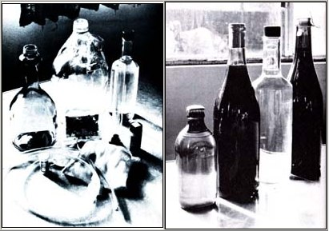
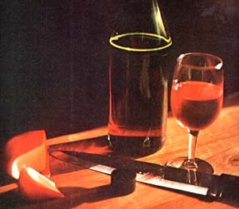

Although homemade wine can be really terrible, it can also be really great. In fact (if you know how to go about it), you can actually make wine at home that will be better than any jug wine you're apt to buy. Not as good . Better. And you'll have the additional satisfaction of knowing that your do-it-yourself drink is all natural and alive ... not laced with some commercial winery's sorbates, sulfur dioxide, or glycerol. And not filtered through asbestos.
Thanks to the high pressures of today's marketplace, you see, commercial wineries (if they want to stay in business) are forced to pound their products into shape with filters and chemicals and pasteurization. They simply can't afford to make everyday wines (which sell for less than $3.00 a bottle) in any other way. The longer they hold a bottle or a jug or a vat of their product, the more it costs them. To a businessman, time is money. .. and the more of it he can squeeze out of the line he markets - be it widgets or wine - the more competitive he becomes.
Ahhh, and there's the rub. Time. Really good wine can only develop over time. And, unlike the owner of a commercial winery, time is the one ingredient you have plenty of. This is the edge that you, as a home winemaker, have. This is the advantage which - used wisely - will allow you to make better wine than you can buy.
If you can fall out of bed in the morning, you can make good wine. It's that easy. But you'll never do it if you try to just blunder along, follow a recipe, throw in a little baker's yeast from time to time, and see what happens.
To make really good - even superb! - wine, you must understand the fundamentals of each step of the process. And you must learn to be absolutely religious about keeping everything in your mini-winery spotlessly clean at all times. Master these two basics of the art, and you'll be able to produce exceptional wine from almost any fruit and a variety of vegetables. (Don't laugh. The English even make the drink from hedge leaves . . . and one of the best wines I've ever tasted was made from beets.)
The (to most people) seemingly mysterious world of fermentation is actually as straightforward and easy to comprehend as any other chemistry experiment. A solution - called must - of water, sugar, fruit juice, and fruit pulp is prepared in a scrupulously clean container and wine yeast is then introduced to the must.
That's wine yeast, and not baker's yeast. Baker's yeast is bred for the taste it leaves in baked goods, while wine yeast has been carefully developed over hundreds of years to leave no taste in wine at all. Baker's yeast is "top fermenting" (most of its action, when it's used to make wine, takes place in the upper few inches of the must) ... wine yeast "bottom ferments". Baker's yeast is sometimes killed by the first few percentage points of alcohol that develop in a container of must ... wine yeast can withstand as much as a 16% concentration of alcohol.
When the yeast plants (actually, very minute fungi) are added to the must, they rapidly reproduce themselves and release carbon dioxide. And, once this carbon dioxide has flushed all the oxygen from the must, the yeast settles down to consume the sugar in the solution and produce alcohol in earnest. Then, when all the sugar is gone (when the must has been converted to wine), the yeast automatically dies and drifts slowly to the bottom of the container.
And basically (although we'll delve into finer points of the art as we proceed through this article) that's it. Our job as winemakers is not to make wine ... but to allow the yeast to make wine. Our task, to put it another way, is simply to set up and control the conditions under which the process takes place so that the best strain of yeast we can obtain is protected and nurtured and left free to make the finest wine it's capable of producing.
Here's all the important items of hardware you'll need to set yourself up as a vintner:
[1] An open container of at least eight gallons capacity
[2] A two-gallon stainless steel or enameled bowl or pot
[3] A two-quart, small-mesh sack
[4] Nine one-gallon, small-mouth jugs
[5] One one-half gallon, small-mouth jug
[6] Six feet of flexible, clear plastic tubing
[7] Twenty-five screw top wine bottles with plastic caps
[8] A roll of plastic food wrap
[9] An assortment of rubber bands
[10] A DEPENDABLE hydrometer
The first item on the list will be used as a primary fermentation vat. Some people prefer that this container be made of the traditional wood or crockery. But, since both wood and crockery are porous and almost impossible to completely clean and disinfect, many other home winemakers (including me) feel that a better bet is a primary fermenter made of food-grade plastic. Try a brand-new plastic (remember, of food grade) wastepaper can or garbage pail ... they're ideal.
Beware of most metals (anything except stainless steel) when you're selecting the primary fermenter and other utensils for your home winery. Metal almost always leaves a haze and an off-taste in wine. Stick with wood, glass, and plastic. And make sure your main fermenting vat will hold at least eight gallons. Primary fermentation is often quite vigorous and can overflow a smaller container.
The small-mesh sack specified above will be filled with fruit pulp and left in the main vat during primary fermentation. Make sure it's large enough to hold two full quarts and still tie off securely at the top. The bag can be made of any porous material: You might, for instance, want to sew up several sacks from a section of nylon drapery. Personally, I just use the legs off an old pair of panty hose.
Cider jugs make very fine gallon and half-gallon bottles for secondary fermentation. I get mine from a local glass recycling center for 10 cents apiece, but you might prefer to collect yours from restaurants and friends. Colored glass and plastic jugs are OK ... but I prefer clear glass so I can look right into the containers and watch my wine develop its polish.
You'll use the plastic tubing to siphon your wine from one container to another at various times during its production. This piece of equipment is more important than it may at first seem because, except for the first time the wine is moved, it should never purposely be exposed to the air. Oxygen can react with a green (undeveloped) wine to produce a nutty flavor (which, although desirable in a sherry, is considered a flaw in a normal table wine). Worse yet, if oxygen is allowed into a new bottle of wine, it can foster the growth of something you don't want at all: vinegar bacteria.
If you can't get transparent plastic hose, colored hose (either plastic or rubber) will do. I prefer clear plastic tubing, however, because I can always tell whether or not it's clean inside. And, yes, used hose is all right as long as it's clean and hasn't been used to siphon something that's caustic or which could impart an off-taste to your wine.
You'll probably have less trouble rounding up the twenty-five wine bottles listed above than anything else on your equipment list. Most states mandatorily require all restaurants, bars, and caterers to throw out all their wine and liquor bottles as soon as the containers are empty. As a result, such establishments are usually happy to have you haul the empties away. And if you prefer the heavier champagne bottles, just check out the next few weddings and parties in your section of town.
I like to store my wine in bottles that close with screw caps. You can buy new ones for about a nickel apiece (or scrounge good used caps at a recycling center), and then reuse them. The plastic corks that come in those lovely champagne bottles are reusable too ... but only for a few times before the ridges around the stoppers become so worn and mashed down that the corks won't positively reseal anymore.
The plastic wrap and rubber bands I've specified will be used as air traps or air locks. Sure, you can buy "real" winemaking glass or plastic locks (with the nifty little water trap inside) for "only" 35 to 50 cents each. That doesn't sound too bad one at a time ... but, for the fivegallon batch of fermented joy we're going to be making, you should have at least eight of the little beauties on hand. And, if you ever plan to have more than one vat of wine going at a time ... you can see that your total investment in air locks "only" 35 cents a shot-can quickly mount up.
Fortunately, there's a very simple and inexpensive way around this problem. Because, after all, what is an air lock anyway? It's nothing but a trap that lets the gas generated by the yeast in a developing bottle of wine out ... while refusing to let the outside air in. And a 10-inch square of plastic wrap placed loosely over the mouth of a gallon jug and secured with a doubled rubber band will do that job as well as anything.
Don't pull the sheet of plastic tight and don't go crazy doubling up your rubber bands. (The tighter the bands, the more pressure it'll take to stretch them enough to let the generated gas out ... and, if the plastic is taut enough, there's always the chance it'll rupture before the bands stretch.) Do make sure the film of plastic is caught under the doubled band all the way around the jug's neck. Then, as pressure builds in the container, the band will have to stretch a little to let the gas out ... and you'll have a positive seal at all times so that no outside air can get in with the wine.
This plastic wrap trap, by the way, is not a new idea ... and it does have one significant advantage over even the most expensive water-type trap: When left unattended for a long period, the water can evaporate from its, trap and leave your wine unprotected. The plastic wrap trap, for all practical purposes, is unaffected by time.
I've saved the most important item of equipment till last ... because a good hydrometer is an absolute necessity for anyone who expects to make quality wine consistently.
Hydrometers seem to intimidate a great many people, and they shouldn't. The simple little instruments are nothing but handy-dandy devices that measure the density of liquids, and the one you'll be using is no different than the hydrometer your local garage mechanic uses when he tests the strength of the battery acid and antifreeze in your car.
Some winemaking hydrometers are nothing but a sealed and weighted, graduated tube that is floated right in a vat or bottle of wine. Others consist of [1] the sealed, weighted, graduated tube inside [2] a hollow, transparent cylinder of glass or plastic which has [3] a short length of tubing on its bottom and [4] a squeeze bulb on the top. By squeezing the bulb, dipping the tubing into a liquid, and then releasing the bulb ... a quantity of the fluid can be drawn into the instrument's main cylinder. And this will cause the little weighted tube inside to float higher or lower in the liquid, depending on the fluid's density. It's then very easy to read one of the graduated scales on the side of the floating tube where it sticks up out of the liquid, and thereby determine the specific gravity of the fluid being tested.
For instance: The specific gravity scale (marked "S.G.") on a hydrometer is set up so that plain, ordinary water - when tested - will give you a reading of 1.000. Any fluid that is "thicker" - say a solution of water and sugar-will cause the indicator tube to float higher and yield a higher specific gravity reading. But if we convert some of the sugar in that solution to a "thinner" liquid such as alcohol (pure alcohol has an S.G. of only about .800), we'll lower the specific gravity of the fluid we're testing in direct proportion to the amount of change that takes place.
What this means, of course, is that we can use a hydrometer to tell us exactly how much sugar to add to a given amount of water to produce - months later - precisely the percentage of alcohol we want in a finished batch of wine. We can also use the instrument to monitor the wine's progress during its development and "fine tune" the fermentation as it goes along.
Complete instructions come with a new hydrometer and I recommend buying one (instead of borrowing) if you plan to make a lot of wine. They only cost about $2.25 apiece new here in Eugene, Oregon, and a good one will last you forever (or until you get careless and drop it).
Two final points about reading a hydrometer: First, make sure the little weighted tube inside is floating freely (give the instrument's cylinder a "spin" between your fingers, if necessary, to shake off any bubbles that might be clinging to the scale inside) before you try to read it. And make that reading with your eye exactly level with the top of the solution in the cylinder. Second, remember that the density of a fluid changes with temperature. Thus, your hydrometer will be strictly accurate at only one temperature (most winemaking S.G. testers are calibrated for 68° F). The variations you'll be dealing with won't be enough to worry about, though, as long as you make some effort to test your wine only at something close to this standard temperature. (if your wine has been stored at-say - 40°, let it warm to room temperature before you test it.)
And that's it for the equipment. Everything you'll need - even if you have to go out and buy it all new-should cost you only about $20. And everything is reusable.
Blackberry is my favorite homemade wine, so let's start with that one. (The recipe will work for all berry wines.) you'll need:
15 pounds of blackberries
1/2 cup of raisins
1/2 teaspoon of ascorbic acid (vitamin C)
5 gallons of water
1 tablespoon of acid blend (or the juice of one lemon)
10 pounds of sugar
1 package of dry wine yeast
If your fruit has been sprayed, wash it. Otherwise, don't. Then crush the berries to release their juice. I like to squash mine by filling a two-gallon flat-bottomed bowl or pot (stainless steel or enamel) half full of berries and then mashing them firmly with my knuckles (the way a gorilla holds its hands when it walks). If you prefer, of course, you can squeeze the fruit by the handful ... but I find the knuckle method faster. Either way, if you use rubber gloves you're missing half the fun.
Once you've turned your berries to mush, empty them into the nylon sack while you hold the bag over your eightgallon plastic can. Squeeze the sack gently against the side of the can to force the free juice from the pulp ... then fill the two-gallon bowl half full of berries again, mash them, add the new pulp to the mass already in the sack, and so on. Repeat until all the fruit has been crushed and all the pulp is in the bag. Then dump in the raisins, tie the top of the sack closed, and leave it in the can with the fruit juice.
Add the ascorbic acid next. (if you can get it, the pow dered form of the vitamin is less expensive than tablets. And, to assure myself that my wine is as "natural" as I can make it, I use only powdered vitamin C made from rose hips.) The purpose of the ascorbic acid, by the way, is to prevent the wine from oxidizing and changing color when it's later exposed to air and light.
OK. Now you're ready to heat five gallons of water almost to boiling and add it to the fruit juice in the eight-gallon can. (The hot water will kill most of the wild yeast and bacteria in the juice and pulp and keep them from competing with the wine yeast that you'll soon introduce to the must. There's no need, however, to boil the juice and pulp to make them absolutely sterile, since boiling would set the pectin they contain and make your wine difficult to clear later.)
Empty in the acid blend next. This is a powdered mixture of three naturally occurring acids (tartaric from grapes, citric from citrus fruits, and malic from apples). Any winemaking supply house will have it in stock and-if you have no such store in your town-you can write to Wine Art, Head Office, Vancouver, British Columbia, Canada and ask for a mail-order catalog and the address of the firm's nearest outlet.
In a pinch, you can substitute the juice of one lemon for the acid blend. It'll work about as well, although wine made with the straight citric acid will be somewhat more susceptible to oxidation than a batch made with the blend. Do add the acid in one form or the other, however, or your wine will be rather flat and insipid.
Once the acid is in, it's time for the sugar and a test of your expertise with the hydrometer. Pour in about twothirds of the 10pound bag of sugar, vigorously stir the solution in the big primary fermentation vat to dissolve the sweetener, cover the can with a towel, and let it cool to room temperature. This will take about ten hours or so, and I find it easier to prepare my must up to this point just before I go to bed at night. By morning, it's nice and cool.
When your must has reached room temperature, check its specific gravity with your hydrometer. Then add a little bit of sugar at a time, stir the must until the sweetener has dissolved, and again test the solution's specific gravity. Stop when the little bulb in the hydrometer floats at the 1,095 mark. (Unless your blackberries are really ripe, you'll use most of the rest of the sack of sugar. And if you accidentally overshoot the S.G. you're after, don't worry. Just add enough water to bring it back down to 1.095 ... a level which will produce a wine that contains about 14% alcohol by volume.)
Finally, once you've adjusted the sugar to your satisfaction, you can sprinkle the dry yeast - straight from its foil packet - onto the surface of the must. DO NOT STIR. Some of the yeast will sink directly to the bottom of the can and most of it will float. That's fine. Let the yeast do what it wants to do.
Within 12 hours, more or less, you should start to see obvious signs of fermentation. Small bubbles will begin to form a circle of foam a few inches in from the wall of your Vat. Any yeast that is still floating will be surrounded by this foam and there will be a distinctly heady smell in the air.
Now that the fermentation is under way, you should stir the must twice a day with something made of wood (never metal!) such as an old broom handle. Punch down the bag of pulp a few times while you're at it. And always re-cover the big can of fermenting must with the towel to keep dust and fruit flies out.
Check the specific gravity of your fermenting brew at least once a day, and keep a record of the developing wine's S.G. As the yeast eats the sugar, it will produce carbon dioxide and alcohol. The gas will bubble off as it forms, but the alcohol will remain in the must. And - as you already know - as the quantity of sugar decreases and the amount of alcohol increases, the specific gravity of the must will drop. When the S.G. reaches 1.030, that's your signal to transfer the wine into closed bottles for secondary fermentation
Why closed bottles? Because, up to this point, the yeast organisms were very active and were producing enough carbon dioxide to cover the surface of the must. The minute fungi are beginning to slow down now, though, and - from this time on - they'll steadily release less and less of the gas. Which means that it's only a matter of time until oxygen will be able to reach the must unless it's otherwise protected in some way.
Wash eight of the nine one-gallon jugs super-clean. Dont use soap. (It leaves a film that's almost impossible to rinse away.) If some deposits are stuck really hard in one of the containers, swish a handful of gravel around in its bottom. If that doesn't do the trick, throw the jug away and get another one. Rinse each container several times with cold water.
Squeeze the bag in the primary fermenter until the sack is completely dry (it'll be much smaller than when you put it in). Then throw away the pulp, rinse the bag in clean water, and hang it where it will stay dry until you want to use it again.
Stir the must and sediment together in the primary vat and, using a cup or bowl as a ladle, fill each of the gallon jugs to the shoulder with the mixture. Don't be tempted to fill the containers any higher than their shoulders. The yeast may be slowing down, but it contains enough "kick" to produce some foam yet ... and you must leave enough space for it. If there's still some of the fermenting brew left in the primary vat after the eight jugs have been filled shoulderhigh, ladle the excess into any available container that - shoulder - high-will hold it. Then cap the eight jugs and the extra container with plastic wrap and rubber bands as I've already outlined.
As soon as you've sealed the secondary fermentation jugs, rinse out the original plastic can with plenty of clean water. Immediately is not too soon to handle this job: If you leave it until later, the residue in the vat's bottom will be doubly hard to remove. So take care of the task now, and then store the can in an airy place until you're ready to start another batch of must.
The nine secondary fermentation jugs should be covered in some way to keep light from reaching their contents. Some home vintners tape a newspaper around each of the bottles, but I find that it's easier to turn a grocery bag upside down over each one. Whatever, keep the containers in the coolest spot you can find (a dark cellar is ideal).
When the foam has disappeared from the surface of the must in the gallon jugs, you should rack (siphon off) the green wine into clean containers.
Rinse out the ninth gallon jug (the one you haven't used yet) and run clean water through your siphon hose. Then place the first gallon to be racked off up on a chair or table and set the empty jug beneath it on the floor. Stick one end of the plastic tubing beneath the surface of the must in the upper jug and - keeping your head lower than the liquid - gently suck on the other end of the hose. Then, before the must reaches your mouth, cap off the end of the tubing with your thumb. (If you're not quick enough with this last step, you'll get a mouthful of must. Don't worry about it. It's good for you.)
Now you're in business. Bring the thumb-capped end of the hose to the mouth of the lower jug and, while you take care to keep the other end of the tubing beneath the surface of the liquid in the upper jug, remove your thumb and start the siphon. As the lower container begins to fill, push that end of the hose down beneath the surface of the accumulating wine (this minimizes the exposure of the must to the air).
When the upper jug is almost empty, slowly tilt it toward you and draw the last of the wine off its sediment. Make sure that you don't accidentally stick the tube into those dregs. As the first bit of sediment begins to sneak up the hose, pull t e ubing from the upper jug. (This whole siphoning operation is much easier when done by two people.)
All right. Carefully rinse the jug you've just emptied, siphon the next filled one into it, and so on. If you plan to start a new batch of wine within the next day or so, you can use the sediment in any of the bottles to inoculate the new must. Just put a few teaspoons of the culture in a closed jar and keep it in the refrigerator until you need it.
This time around - unlike the last - you'll want to fill each of your gallon containers to within an inch of their rims. (Fermentation is over and there's no longer any danger of the wine foaming up.) After racking, you should find yourself with approximately five and a half gallons of wine on your hands. Put the odd half gallon into the half-gallon jug in on your equipment list, seal all six containers with plastic wrap and rubber bands, and store the jugs in a cool place.
Rack the wine again after three weeks and again at the end of three months (or, if it has already cleared, at the end of only two months). Your blackberry wine will then be ready to put into bottles.
FIRST AID FOR UNCLEAR WINE
Although it's never happened to me, there is a slim chance that your wine won't have cleared at the end of even three months. If that's the case, your best cure for the problem is time. Given enough of that magic ingredient, almost any wine will eventually lose its haze (some apple wines habitually take as long as a year to clear).
If you feel that you can't wait your must out, you can sometimes clear a wine by presenting it with a large surface area of something - traditionally, wood - for its particles of haze to settle on. Try boiling some oak chips for a few minutes, draining them, and then putting a couple of tablespoons of the shavings into one of the gallon jugs. The chips of oak should [1] help clear the wine, [2] mellow it, [3] darken the must and give it character, and [4] add a distinctive oak flavor to the brew. Although the addition of the shavings should speed the wine's clearing, it will still take time for the haze to settle. So taste the wine every few weeks to see if the oak taste is becoming too strong.
Beechwood shavings or chips - which won't add any taste to your must - can also be used to clear a stubborn batch of wine. Again, add a couple of tablespoons per gallon and leave them in until the wine clears ... or you give up.
Yet another way to settle the haze out of your bottles involves the use of egg whites (which have been pressed into service for this purpose for centuries). Whip up one egg white per gallon of wine and pour it into the jugs. As it drifts to the bottom, particles of haze will adhere to the whipped white. Shake each jug gently once a day for a week or two until the wine has completely cleared.
None of the methods I've outlined here are foolproof and you'll find that some wines simply will not clear unless they're filtered. To heck with filtering. Just drink the wine as it is. The haze won't affect its taste in any way ... just its visual appeal.
Next to drinking, bottling is the best part of winemaking. Your fresh batch of the beverage - finally! - doesn't look or smell so bad anymore. It's even beginning to taste pretty good! Hey, this is all right! Bring on the bottles.
But first, you'll want to make absolutely certain that all the action of the yeast is over. Just looking at the wine, or tasting it, won't tell you. But your trusty hydrometer will. If it reads below 1.000 S.G. (my blackberry wine always tests .995 after two months) and your wine is acceptably clear, you're safe. It really is time to bring on the bottles.
Wash your twenty-five wine bottles thoroughly with a bottle brush and plenty of water. If you don't have a brush, use gravel again as you did with the gallon jugs.
Next, mix up a weak bleach solution (a couple of teaspoons of laundry bleach in a pint of water) and rinse each of the containers with it. Then rinse each one at least twice again with clean water.
I assume that your bottles are each the standard fifthgallon containers common in the United States. If so, the five gallons of wine (with maybe a little over) that you probably racked at the. end of two or three months will just fill all 25 of your bottles to within an inch of their tops.
Start your siphon and begin the filling. You can, if you ,like, shell out $1.50 or so for a fancy little shutoff valve that will allow you to stop the flow of wine as you move from bottle to bottle. It's simpler and less expensive, though, to just fold the hose in your hand and crimp it down whenever you want to slow or stop the stream of wine.
When the bottles are full, seal them with the plastic caps ... and that's it. If you like the taste of your creation as is, you can begin drinking it immediately. Or, if you find the new wine still a little green, just store it away in a cool and dark place and try it again in about two months. You'll probably find it much smoother and far less astringent at that time.
The blackberry drink we've just made is a dry wine. . . which means that almost no sugar remains in the beverage after it has fermented. The wine, in short, is not sweet.
If you prefer a sweet wine, there are a number of ways to alter this recipe (by killing the yeast early with cold or chemicals or adding so much sugar that the yeast dies from the concentration of alcohol before the sweetener is all gone). Most are beyond the scope of this article.
There is, however, a very easy way for a home vintner to serve sweet wines. Just make up a solution of half water and half sugar. Heat it until it clears and then allow it to cool (so that it will remain in solution), and keep it in a pretty decanter on the table for anyone who wants to sweeten his or her wine to taste. Honey, of course, may be used in the same way ... but stick with the milder tasting light honeys and use only about half as much (since honey is much sweeter than sugar).
Once you realize how easy wine is to make, you'll probably want to try whipping up a batch or two from other fruits (and vegetables). No problem.
OTHER BERRIES. The basic recipe I've just given you for blackberry wine will work with any berry.
APPLES AND PEARS. Use a whole ounce of the vitamin C (since this fruit oxidizes so easily) and sprinkle it right into the pulp as you crush it. That crushing, by the way, is easier done with some sort of pestle since apples and pears are a little tough on the knuckles. A wooden pestle is ideal, but I usually just use a jar filled with water (don't ram it into the fruit and it won't break). Go easy, though, when you use any kind of tool to crush your fruit. Seeds contain tannin, which can make a wine taste harsh (the idea, then, is not to break up the seeds). Other variations on the basic recipe for apple or pear wine: Use a ratio of five pounds fruit for each gallon of water and add one and a half (instead of just one) teaspoons of the acid blend.
CHOKECHERRY OR ROSE HIP. Use two pounds of fruit for each gallon of water and one teaspoon of acid blend.
BEETS, PARSNIPS, AND CARROTS. Try three pounds of any one of the vegetables per gallon of water and use two teaspoons of the blend.
GRAPES: Ah ha! The perfect fruit for wine. Forget the recipe, if you have California grapes, and add nothing at all (not even water or acid blend) except the sugar you need to bring the must to 1.095 S.G. Native American wild grapes are a little different: Thin them by half with water, and add sugar until you have a specific gravity reading of 1.090. The wild grapes need no acid blend.
For more wine recipes than you'll probably ever try, get a copy of the booklet, Brother Vintner Country Wines from Wine Art (see address included in the discussion of acid blend in this article). Or truck on down to your local bookstore or library for copies of The Winemakers Companion by Bernard Turner, The Art of Making Wine by Stanley Anderson, and/or Wine and Beer Making Simplified by H. Bravery.
The rest is up to you. Just remember that - even at $2.60 per 10-pound bag of sugar - your homemade drink will cost you only about 12 cents a bottle out-of-pocket. And remember, too, that you'll never know how many friends you have ... until the word gets around about the good wine you're turning out. Skoal!
|
|
 |
 |